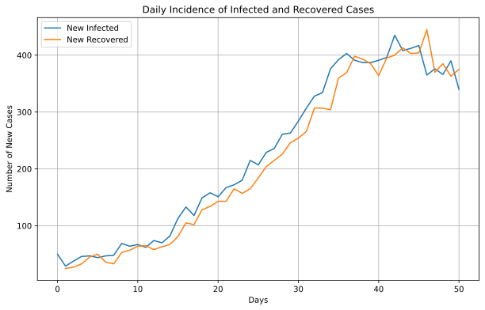
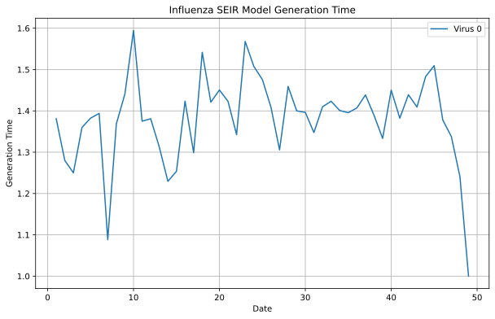
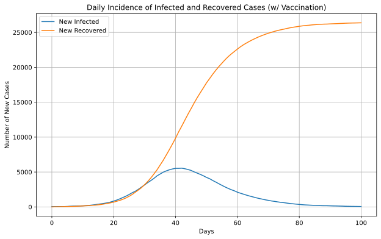

import numpy as np
import matplotlib.pyplot as plt
# Get the data from the database.
history = model.get_db().get_hist_total()
# Extract unique states and dates.
unique_states = np.unique(history['states'])
unique_dates = np.unique(history['dates'])
# Initialize a dictionary to store time series data for each state.
time_series_data = {state: [] for state in unique_states}
# Populate the time series data for each state.
for state in unique_states:
for date in unique_dates:
# Get the count for the current state and date.
mask = (history['states'] == state) & (history['dates'] == date)
count = history['counts'][mask][0]
time_series_data[state].append(count)
# Start the plotting!
plt.figure(figsize=(10, 6))
for state in unique_states:
plt.plot(unique_dates, time_series_data[state], label=state)
plt.xlabel('Day')
plt.ylabel('Count')
plt.title('Influenza SEIR Model Data')
plt.legend()
plt.grid(True)
plt.show()Frameworks for Epidemiologic Agent-Based Modeling
Epiworld and its various wrappers
Milo Banks
George G. Vega Yon, Ph.D.
2024-10-14
What is Epiworld?
- Epiworld is a general framework for epidemiological simulations aimed at modeling infectious diseases and their dynamics.
- It is designed for flexibility and scalability, allowing researchers and policymakers to simulate disease outbreaks, interventions, and public health responses.
- Built on robust epidemiological models (SIR, SEIR, SIS, etc.), Epiworld enables complex simulations involving individual behaviors and network structures.
Goal of Epiworld
- Facilitate the simulation of infectious disease spread across populations.
- Incorporates network-based interactions, vaccination strategies, and public health interventions.
Use Cases
- Public health policy planning (e.g., vaccination strategies, social distancing policies).
- Disease outbreak prediction and monitoring.
- Educational tools for epidemiology students and researchers.
- Real-time decision-making during localized (or larger) outbreaks.
Architecture (Model Building)
Architecture (Updates)
Wrappers and Methods of Interface
- EpiworldR: R wrapper that makes it easy to run simulations in the R environment, favored by data scientistss.
- EpiworldPy (In Progress): Python wrapper, enabling the use of Epiworld in Python, which is also favored in data science and machine learning spheres.
- EpiworldRShiny: A non-programatic of interacting with Epiworld.
- EpiworldWeb (In Progress) : A port of Epiworld to WebAssembly, allowing serverless simulations.
A Look at EpiworldRShiny
Preview of EpiworldWeb
Comparison of Wrappers
- What does EpiworldPy exist over EpiworldR?
- EpiworldRShiny must be run locally on a computer despite being packaged as a website, whereas EpiworldWeb needs no prerequisites.
Example
Demo: Influenza Outbreak in SLC (Original C++)
/* Creating the model. */
epimodels::ModelSEIRCONN<> model(
"Influenza", /* Name of the virus. */
50000, /* Population. */
0.01, /* Initial prevalence. */
0.9, /* Contact rate. */
0.3, /* Transmission rate. */
0.5 /* Recovery rate. */
);
/* Running and checking the results. */
model.run(50, 123);
model.print();Demo: Influenza Outbreak in SLC (EpiworldPy)
Demo: Graphing Model Compartments
Demo: Graphing Model Compartments

Demo: Effective Reproduction Rates
# Get the data from the database.
reproductive_data = model.get_db().get_reproductive_number()
# Start the plotting!
plt.figure(figsize=(10, 6))
for virus_id, virus_data in enumerate(reproductive_data):
average_rts = list()
for date_data in virus_data:
if not date_data:
continue
keys_array = np.array(list(date_data.values()), dtype=np.float64)
average_rts.append(np.mean(keys_array))
plt.plot(range(0, len(average_rts)), average_rts, label=f"Virus {virus_id}")
plt.xlabel('Date')
plt.ylabel('Effective Reproductive Rate')
plt.title('Influenza SEIR Model Effective Reproductive Rate')
plt.legend()
plt.grid(True)
plt.show()Demo: Effective Reproduction Rates
Demo: Case Type Incidence
import pandas as pd
# Get the data from the database.
transition_matrix = pd.DataFrame(model.get_db().get_hist_transition_matrix(False))
grouped = transition_matrix.groupby(['dates', 'states_to'])['counts'].sum().unstack().fillna(0)
daily_incidence = grouped.diff().fillna(0)
# Plot!
plt.figure(figsize=(10, 6))
plt.plot(daily_incidence.index, daily_incidence['Infected'], label='New Infected')
plt.plot(daily_incidence.index, daily_incidence['Recovered'], label='New Recovered')
plt.title('Daily Incidence of Infected and Recovered Cases')
plt.xlabel('Days')
plt.ylabel('Number of New Cases')
plt.legend()
plt.grid(True)
plt.show()Demo: Case Type Incidence

Demo: Generation Time
from collections import defaultdict
# Get the data from the database.
generation_time = model.get_db().get_generation_time()
agents = generation_time['agents']
viruses = generation_time['viruses']
times = generation_time['times']
gentimes = generation_time['gentimes']
# Data formatting.
unique_viruses = np.unique(viruses)
data = defaultdict(lambda: defaultdict(list))
for agent, virus, time, gentime in zip(agents, viruses, times, gentimes):
data[virus][time].append(gentime)
average_data = {virus: {} for virus in unique_viruses}
for virus, time_dict in data.items():
for time, gentime_list in time_dict.items():
average_data[virus][time] = np.mean(gentime_list)
# Plotting.
plt.figure(figsize=(10, 6))
for virus, time_dict in average_data.items():
times = sorted(time_dict.keys())
gentimes = [time_dict[time] for time in times]
plt.plot(times, gentimes, label=f'Virus {virus}')
plt.xlabel('Date')
plt.ylabel('Generation Time')
plt.title('Influenza SEIR Model Generation Time')
plt.legend()
plt.grid(True)
plt.show()Demo: Generation Time

Demo: Agent-Agent Interactions
import networkx as nx
from matplotlib.animation import FuncAnimation
# Get the data from the database.
transmissions = model.get_db().get_transmissions()
start = transmissions['source_exposure_dates']
end = transmissions['dates']
source = transmissions['sources']
target = transmissions['targets']
days = max(end)
graph = nx.Graph()
fig, ax = plt.subplots(figsize=(6,4))
# Animation function.
to_track = { source[0] }
def update(frame):
ax.clear()
agents_involved_today = set()
agents_relationships_we_care_about = []
# Get only the agents involved in the current frame.
for i in range(len(start)):
if start[i] <= frame <= end[i]:
agents_involved_today.add((source[i], target[i]))
# Get only today's agents who have some connection to agents
# we've seen before.
for agent in agents_involved_today:
if agent[0] in to_track or agent[1] in to_track:
to_track.add(agent[0])
to_track.add(agent[1])
graph.add_edge(agent[0], agent[1])
# Lay and space them out.
pos = nx.kamada_kawai_layout(graph)
options = {
"with_labels": True,
"node_size": 300,
"font_size": 6,
"node_color": "white",
"edgecolors": "white",
"linewidths": 1,
"width": 1,
}
# Graph!
nx.draw_networkx(graph, pos, **options)
ax.set_title(f"Influenza SEIR Model Agent Contact (Day {frame})")
ani = FuncAnimation(fig, update, frames=int(days/3), interval=200, repeat=False)
plt.show()Demo: Agent-Agent Interactions
Demo: Multiple Viruses
model = epiworld.Model()
model.add_state("Susceptible", epiworld.UpdateFun.default_update_susceptible());
model.add_state("Infected", epiworld.UpdateFun.default_update_exposed());
model.add_state("Recovered", epiworld.UpdateFun.default());
model.add_state("Removed", epiworld.UpdateFun.default());
covid19 = epiworld.Virus(
name = 'covid-19',
prevalence = .001,
as_proportion = False,
prob_infecting = 0.2,
prob_recovery = 0.92,
prob_death = 0.08,
post_immunity = 0.7,
incubation = 5,
)
flu = epiworld.Virus(
name = "flu",
prevalence = 0.003,
as_proportion = False,
prob_infecting = 1.0,
prob_recovery = 0.95,
prob_death = 0.05,
post_immunity = 0.6,
incubation = 9
)
# Black magic.
flu.set_state(1, 2, 3);
covid19.set_state(1, 2, 3);
# Add it to our model.
model.add_virus(flu)
model.add_virus(covid19)
# We need agents to infect.
model.agents_smallworld(100000, 4, False, 0.01);
# Run things.
model.run(100, 223)
model.print(False)Demo: Multiple Viruses
_________________________________________________________________________
Running the model...
||||||||||||||||||||||||||||||||||||||||||||||||||||||||||||||||||||||||| done.
done.
________________________________________________________________________________
________________________________________________________________________________
SIMULATION STUDY
Name of the model : (none)
Population size : 100000
Agents' data : (none)
Number of entities : 0
Days (duration) : 100 (of 100)
Number of viruses : 2
Last run elapsed t : 2.00ms
Last run speed : 3347.84 million agents x day / second
Rewiring : off
Global events:
(none)
Virus(es):
- flu
- covid-19
Tool(s):
(none)
Model parameters:
(none)
Distribution of the population at time 100:
- (0) Susceptible : 100000 -> 100000
- (1) Infected : 0 -> 0
- (2) Recovered : 0 -> 0
- (3) Removed : 0 -> 0
Transition Probabilities:
- Susceptible 1.00 0.00 0.00 0.00
- Infected - - - -
- Recovered - - - -
- Removed - - - -
<epiworldpy._core.Model at 0x1690dc130>Demo: Model Control Tools
# Bring this back for simplicity.
model = epiworld.ModelSIRCONN(
name = 'covid-19',
n = 50000,
prevalence = .001,
contact_rate = 2.0,
transmission_rate = 0.3,
recovery_rate = 0.13
)
vaccine = epiworld.Tool(
name = "Vaccine",
prevalence = 0.5,
as_proportion = True,
susceptibility_reduction = 0.9,
transmission_reduction = 0.5,
recovery_enhancer = 0.5,
death_reduction = 0.9
)
model.add_tool(vaccine)
# Run things.
model.run(100, 223)
model.print(False)Demo: Model Control Tools
_________________________________________________________________________
Running the model...
||||||||||||||||||||||||||||||||||||||||||||||||||||||||||||||||||||||||| done.
done.
________________________________________________________________________________
________________________________________________________________________________
SIMULATION STUDY
Name of the model : Susceptible-Infected-Removed (SIR) (connected)
Population size : 50000
Agents' data : (none)
Number of entities : 0
Days (duration) : 100 (of 100)
Number of viruses : 1
Last run elapsed t : 101.00ms
Last run speed : 49.34 million agents x day / second
Rewiring : off
Global events:
- Update infected individuals (runs daily)
Virus(es):
- covid-19
Tool(s):
- Vaccine
Model parameters:
- Contact rate : 2.0000
- Recovery rate : 0.1300
- Transmission rate : 0.3000
Distribution of the population at time 100:
- (0) Susceptible : 49950 -> 23561
- (1) Infected : 50 -> 61
- (2) Recovered : 0 -> 26378
Transition Probabilities:
- Susceptible 0.99 0.01 0.00
- Infected 0.00 0.85 0.15
- Recovered 0.00 0.00 1.00
<epiworldpy._core.ModelSIRCONN at 0x1690dcfb0>Demo: Model Control Tools (Graph Proof)
# Get data from the database.
transition_matrix = pd.DataFrame(model.get_db().get_hist_transition_matrix(False))
grouped = transition_matrix.groupby(['dates', 'states_to'])['counts'].sum().unstack().fillna(0)
daily_incidence = grouped.diff().fillna(0)
# Plot!
plt.figure(figsize=(10, 6))
plt.plot(daily_incidence.index, daily_incidence['Infected'], label='New Infected')
plt.plot(daily_incidence.index, daily_incidence['Recovered'], label='New Recovered')
plt.title('Daily Incidence of Infected and Recovered Cases (w/ Vaccination)')
plt.xlabel('Days')
plt.ylabel('Number of New Cases')
plt.legend()
plt.grid(True)
plt.show()Demo: Model Control Tools (Graph Proof)

Demo: Model Control Tools (Graph Proof)
# Get data from the database.
reproductive_data = model.get_db().get_reproductive_number()
# Start the plotting!
plt.figure(figsize=(10, 6))
for virus_id, virus_data in enumerate(reproductive_data):
average_rts = list()
for date_data in virus_data:
if not date_data:
continue
keys_array = np.array(list(date_data.values()), dtype=np.float64)
average_rts.append(np.mean(keys_array))
plt.plot(range(0, len(average_rts)), average_rts, label=f"Virus {virus_id}")
plt.xlabel('Date')
plt.ylabel('Effective Reproductive Rate')
plt.title('COVID-19 SIR Model Effective Reproductive Rate (w/ Vaccination)')
plt.legend()
plt.grid(True)
plt.show()Demo: Model Control Tools (Graph Proof)
Closing Thoughts
Closing Thoughts
epiworldis a high-performance C++ library designed for building agent-based epidemiological models.- A flexible framework, allowing callers to define custom states and update dynamics for their models.
- It has as been utilized in numerous epidemiological agent-based modeling research projects and studies.
- Check it out at github.com/UofUEpiBio/epiworld!
Closing Thoughts
We are looking for collaborators and contributors!
Questions
Epiworld talk - https://github.com/EpiForeSITE/epiworld-milo-talk